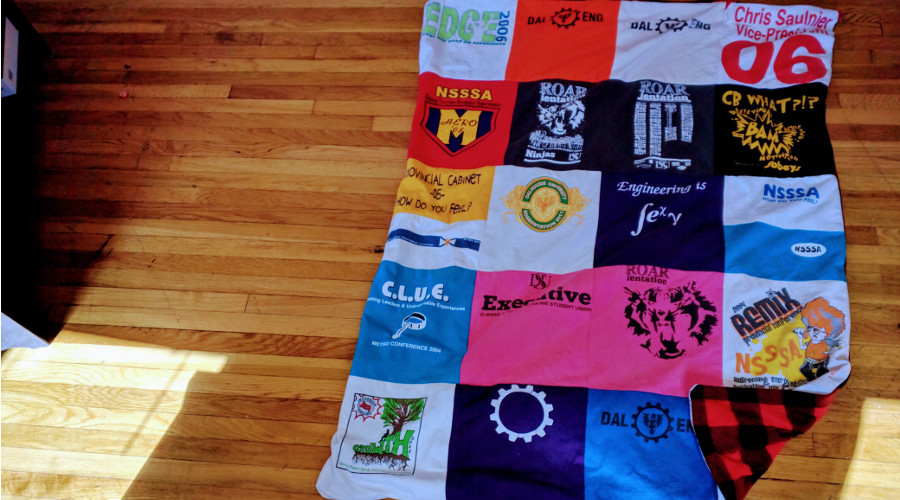
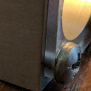
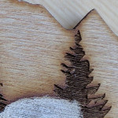
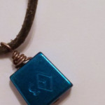

Christopher Robert Saulnier

PhD Candidate,
Product Design and Engineering Education
MIT-SUTD Collaboration Office
Massachusetts Institute of Technology
Contact:
77 Mass. Ave, Building 3-339L, Cambridge, MA, 02139.
saulnier at mit dot edu
MIT-SUTD Collaboration Office
Massachusetts Institute of Technology
Contact:
77 Mass. Ave, Building 3-339L, Cambridge, MA, 02139.
saulnier at mit dot edu
Smaller Miscellaneous Projects

I decided to make a t-shirt quilt as I had a box of old t-shirts from a high-school student leadership organization I was involved with, my time as an undergraduate engineering student, and my time working with the Dalhousie Student Union. To keep these memories around I cut the t-shirts into squares, ironed interfacing onto the back, borrowed a sewing machine, taught myself how to use it, and made a quilt backed with fleece so the blanket could keep me as warm as the memories.
t-shirt quilt as I had a box of old t-shirts from a high-school student leadership organization I was involved with, my time as an undergraduate engineering student, and my time working with the Dalhousie Student Union. To keep these memories around I cut the t-shirts into squares, ironed interfacing onto the back, borrowed a sewing machine, taught myself how to use it, and made a quilt backed with fleece so the blanket could keep me as warm as the memories.';" alt="" title="" border="">
flashlight out of metal using the two machines. This approach originated in the edgerton center but can now be done across campus in various locations. I completed this training in the Beaverworks Shop.';" alt="" title="" border="">
nametag which contained elements of who I was as a person. The result is a laser cut piece of wood in the shape of the elevation profile of the Presidential Range of the White Mountains of NH, laser etched trees in the foreground, and a rather poorly painted name.';" alt="" title="" border="" >
Jewelry I tried my hand at making jewelry converting some traditional climbing protection (referred to as stoppers or nuts) into pendants. To do this I removed the original wire they were slung on and experimented with various gauges and hardness of silver wire to determine what worked best for re-threading the stopper as a pendant.'; " alt="" title="" border="">
© Chris Saulnier 2018